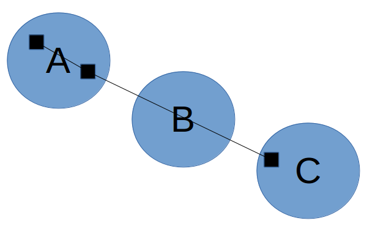
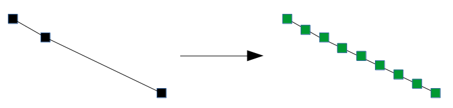
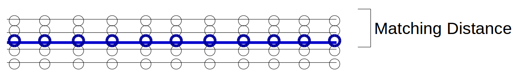
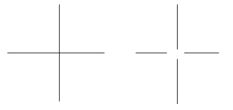

- Overview
- Section 1 — Implement K-Means-Clustering Map Inference Algorithm
- Section 2 — Evaluation
- Section 3 — Topology-Sensitive Evaluation Metric
Overview
In this lab, you will
- Implement a simplified k-means-clustering map inference algorithm
- Compare the performance of the clustering algorithm to that of a kernel density estimation algorithm qualitatively, and also using a provided geometric evaluation metric
- Develop a topology-sensitive evaluation metric
Teams of two are encouraged but not required. The lab is due Wednesday, April 19. Come to us early if you get stuck!
Start by downloading the Python code for this lab. These files are included:
- infer_kmeans.py: you will implement k-means clustering map inference algorithm here.
- util.py: various utility functions and classes to load traces, represent graphs, and visualize various spatial data; you will use some of these in Section 1 and Section 3.
- infer_tests.py: some unit tests to make sure you implemented infer_kmeans correctly.
- infer_kde.py: this is a provided kernel density estimation map inference algorithm that you will evaluate in Section 2.
- trace_generator.py: a basic simulator to generate GPS traces with a specified level of Gaussian noise.
- eval_geo.py: a geometric evaluation metric.
- trips_uchicago_meters: data from shuttles on the UIC campus, for Section 2.
If you're using OSX, it may be difficult to install OpenCV2, which is the old version that the code uses. A quick solution for this would be to get on a Linux machine and run "sudo apt-get install python-opencv". You should be able to do "import cv". If you can't get access to a Linux machine, please send me an email at rsong@mit.edu.
Section 1 — Implement K-Means-Clustering Map Inference Algorithm
You will implement the k-means clustering map inference algorithm outlined in lecture. The algorithm operates in four phases:
- Get markers: drop markers along each trace at fixed intervals
- Initialize clusters: find an initial set of cluster centers
- k-means: run k-means clustering to identify clusters of markers
- Generate edges: process the traces to add edges between clusters
Get markers. The algorithm starts by extracting markers to use as points for clustering. Although we could simply use the raw GPS samples as markers, this will not work well if the GPS samples are very far apart: recall that in the fourth phase, we pass through each trace, and if successive markers are in different clusters, we connect those clusters; if the samples are too far apart, then we might end up adding an edge that bypasses an intermediate cluster:

Below, we instead add markers at a small fixed distance along the trace. When we add edges later, it is unlikely that the edges will bypass a cluster:

Each marker will be associated with not only a position, but also a bearing. The bearing indicates which direction the vehicle associated with the marker is facing, and is measured as an angle in degrees from the positive x axis.
Initialize clusters. Next, we select a set of initial cluster centers. k-means clustering will improve these cluster centers in the next phase, but it is important to have a good initial set of centers or we will still end up with bad clusters.
To get the initial centers, we will repeatedly randomly sample a marker from the set of markers that have not yet been assigned to a cluster. After selecting a marker as a center, any other markers that fall within a certain distance threshold and bearing threshold to the selected marker will be assigned to the cluster of the selected marker. We repeat this process until all markers are assigned to some cluster.
k-means clustering. Now, we run k-means clustering to refine our clusters. We will take into account both distance and bearing difference when we perform k-means clustering; you can think of this as if we have a three-dimensional space, where the distance function used in clustering takes into account not only the two-dimensional distance, but also the bearing difference.
Wikipedia has a good visualization of k-means clustering (see "Demonstration of the standard algorithm").
Generate edges. Finally, we add edges between clusters. We initialize a road network graph where the center of each cluster is a vertex (but no edges have been added yet), and then process the traces one by one. For each trace, we iterate over the markers that we created for that trace in the first phase. If two successive markers belong to different clusters, then we connect those clusters. Once we have done this for all traces, we output the resulting road network graph.
In infer_kmeans.py, you should implement the missing functions:
- initialize_clusters (this should return a list of Cluster objects)
- kmeans
- generate_edges
As you implement each step, run infer_tests.py to make sure your implementation is running correctly.
Section 2 — Evaluation
You will now compare the k-means clustering and kernel density estimation map inference algorithms on datasets generated by trace_generator in various configurations. You will also evaluate them on the UIC shuttle dataset (from the Biagioni/Eriksson paper).
To run trace_generator, do something like this:
python trace_generator.py -m trace_generator_map.xml -o output/ -n 100 -g 4 -i 30
This will generate 100 traces where GPS samples are taken 30 meters apart and have 4 meter standard deviation of Gaussian noise. The traces will be saved in the folder "output".
You can then run the infer_kmeans and infer_kde algorithms (you will need to install OpenCV and python-opencv):
python infer_kmeans.py output python infer_kde.py output
This will generate kmeans-inferred.graph and kde-inferred.graph. The .graph files can be loaded with read_graph in util.py. To visualize the graphs, use a Python script like this:
from util import read_graph, visualize
actual = read_graph('boston.graph')
a = read_graph('kde-inferred.graph')
b = read_graph('kmeans-inferred.graph')
visualize('graph.svg', [actual, a, b], [], [], 3)
Finally, get the result from the geometric evaluation metric:
python eval_geo.py boston.graph kde-inferred.graph
Task 1: Analyze Performance with respect to Sparsity and Noise
Using trace_generator, generate traces with various sparsity -- start with 30 meters, and then try at least four other parameters while keeping GPS noise at 4 meters.
Run both map inference algorithms and plot the geometric evaluation F1 scores as the sparsity increases. Also make plots for the precision and recall.
Then, do the same with GPS noise -- start with 4 meters, and try at least four other parameters while keeping sparsity at 30 meters.
Also use the visualize function in util.py to qualitatively compare the inferred maps. How well does the eval_geo.py score correspond to your qualitative comparison?
Task 2: Run on UIC Dataset
Run both map inference algorithms on the UIC dataset. Output SVG images of the generated graphs using the visualize function and qualitatively analyze the performance differences between the algorithms. (We do not have a ground truth graph file for this region to use for eval_geo.py.)
Section 3 — Topology-Sensitive Evaluation Metric
The geometric evaluation metric that we provided is very simple. It first lays down markers along the ground truth road network and the inferred road network, with a fixed distance between markers. Then, it iterates through both sets of markers and tries to match each marker with another marker in the other set: as long as there is some marker in the other set that is within a matching distance of the marker, then the marker is considered successfully matched. Then:
- precision = (matched markers for inferred network) / (total markers for inferred network)
- recall = (matched markers for ground truth network) / (total markers for ground truth network)
Note that the metric does not enforce a one-to-one matching. So, for example, even a road is duplicated several times in the inferred network, it will still have perfect precision and recall along the copies of that road as long as they are all within the matching distance of the actual road:

Above, the black lines represent the inferred graph while the blue line represents the ground truth road. Since the black markers are all within the matching distance to at least one blue marker, and we are not enforcing a one-to-one matching, precision and recall are both 1.
This metric has several drawbacks. One major drawback is that it won't penalize for small topological differences (where the positions of roads are correct but the way that they connect at intersections differs) in the maps; for example, the ground truth graph might have a four-way intersection, while the inferred graph might have all four roads stop before they intersect:

For most purposes of the map (like getting directions from one location to another), these are actually very significant differences.
Your task in this section is to implement an evaluation metric that penalizes for these kinds of topological differences. You can implement one of the metrics described in class (TOPO/holes-and-marbles and shortest path), or design and implement your own. Your metric can take into account the directionality of edges, but it does not have to. Run your metric on the graphs inferred earlier in Task 1, and create corresponding plots (include precision/recall plots if your metric uses precision and recall).
For shortest path, one metric would be to randomly select a pair of vertices in the ground truth graph, find the nearest vertices in the other graph, and then compare the distance of the shortest path between the vertices. Then, repeat this process several times. For holes-and-marbles, you would randomly pick a vertex in the ground truth graph, and find the nearest vertex in the other graph. Then, do a breadth first search from the vertex selected in each graph, and place markers every 10 meters or so along the edges; stop the search when you exceed some radius away from the start vertex (e.g., 300 meters). Lastly, match the markers between the graphs and compute precision and recall.
We have included two pairs of actual/inferred graphs in the section3_graphs/ folder for which eval_geo.py gives F1-score of 1.0. Your metric should give a non-perfect score for these two pairs. You can use the visualize function in util.py to visualize these graphs.
Check-offs
We will be in the 32-G9 lounge for check-offs on Wednesday, April 18 4pm-5pm and Thursday, April 19 4pm-5pm.